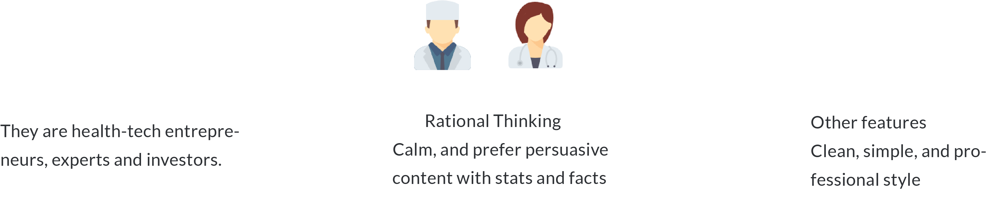

Xinno Health Summit
Summit Branding & Website Design
I led the design of Xinno Health summit from start to finish including branding guideline, website design, invitation letter design, brochure design, and banner design.
Overview
Xinno health is a cross-border health tech summit hosted in Seattle, WA. It brings together clinicians, technologists, researchers, public health officials, and experts from both the Pacific Northwest and China for three days of in-depth discussions, seminars, and networking.
My task was to design a website and printed artifacts to introduce Xinno Health Summit and attract people who are intersted in health-tech to buy summit tickets online.
Collaboration
Being the lead UI/UX designer in the team, I got to work with stakeholders, product manager and developers frequently, discussing user needs, business goals, and refining my design constantly.
Mandi fu (Designer) Yan Huo (PM) Yusuf Rasheed(Dev) Navaeh Tang(Dev)
June 2018- Aug 2018
Define the challenges
Interviews: I interviewed 3 stakeholders to understand their requirements and expectations of the website design and design artifacts.
Competitive analysis:I analyzed three similar health-tech summits to learn more about their offerings, identities, brand strengths and brand weaknesses to find out the brand opportunity for Xinno Health.
Mood Board: I gathered brand inspiration based on the results of the interviews with stakeholders and competitive analysis.Shared this with stakeholders to make sure our visions are aligned. Often times, this step will lead to more clarity with relations to the goal of the project because thoughts or ideas that were not able to be articulated in the project brief come to light.
Research Findings:
Findings from interviews and discussions with stakeholders:
01/ Target audience
Pain points and needs:
• Health tech leaders in the US are seeking business partnerships in Asia, but they do not know how to connect with asian health tech leaders because of the cultural and language barriers.
• Health tech leaders in the US and Asia are seeking investment and finanace channels to bring their products to the market.
• Health tech investors are searching for promising startups to invest.
02/ Bussiness goals
Attract target audience to buy tickets online to participate in Xinno Health Summit.
03/ Build up the Xinno Health brand
The relationship between Xinno, Xinno Health and Xinno Week.
Xinno is a brand created by VestLink in 2018. Xinno Health and Xinno Week are two main summits of Xinno. In May 2018, Xinno Week was sucessfully hosted in Seattle. As a corelated summit, Xinno Health has to build up on the design elements that Xinno Week has already had, but also has its own brand guideline that can differentiate these two summits.
Findings from competitive analysis:

Moodboard for Xinno Health Summit
The Design
Cross-border collaboration, technology, and innovation are keywords representing the core mission of Xinno Health. The logo design helps convey a comprehensive meaning of "international", "global", "technical", and "connective". Because the logo is slender and thin, I used a bold "2018" to balance its relatively light visual effect.

I chose a set of complementary colors to tell the story: the purple represents technology and future, while the blue represents creativity, innovation and dynamic. These two have been used as headline colors and highlight colors. Black is the base color and has been used as background and main context type color.
I chose a san-serif font to help convey a clean and neat feeling of the brand. Helvetica font has been used for primary headlines and main context.
Website design
The target users of Xinno Health website are clinicians, technologists, researchers, public health officials and experts in health tech industries. The process of building this website is below:
The target users of Xinno Health website are clinicians, technologists, researchers, public health officials and experts in health tech industries. The goal is to attract target users to join the Xinno Health summit.


Invitation letter, brochure, name badge design
H: 100mm
W: 210mm

H: 175mm
W: 260mm


H: 130mm
W: 90mm


H: 277mm
W: 586mm

Led billboard design
Screen Ratio: 9 : 5

Screen Ratio: 32 : 5


What I have learnt
Since the client used Squarespace as the CMS, we faced great amount of technical issues when executing the design. For example, we include the primary menu and secondary menu in our design, but none of the template in Squarespace supports the menu design and the add-on codes did not work in Squarespace. Therefore, we had to change design to make sure we have two menus when using the template. I considered this as a design failure and will make sure inscribe engineering constraints in the early stage of design.
Having meetings or send out a questionnaire are helpful for you to understand business goals from stakeholders. Based on the information you have from the questionnaire and meetings, you can provide a moodboard to verify your assumptions of what the stakeholders would like to see in their brand.
You might have thousands of questions in the design process. But most of them can be solved by googling. It would be better to do your research before ask, which can save other’s time. But at the same time, its important to be not blocked on a doubt for more than a certain amount of time and in that case use other’s assistance to get the work done quickly.
As a new member and junior designer in the team, it’s hard to present your design thinking with confidence when you know people in your team have more experience and deeper understanding of the product. That is true that you might not come up with the right design. However, communication with your team is the key to verify and improve your design. You can also learn from other designer’s design thinking process to make up for your own design.